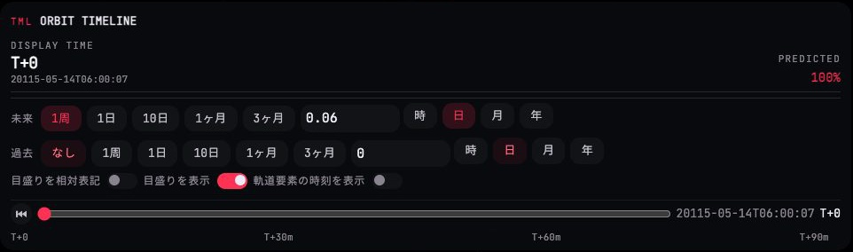

マップビューの現行 HUD は、中央の地図よりも周りのパネルのほうが大きい。とくに下部の軌道タイムラインは 960×280 px で、時間を「掴む」操作は細いスライダー1本だけなのに、 未来/過去の期間ピル(7個×2段+数値入力+単位4個)と3つのトグルが面積の大半を占める。左レールは ORB / DSP / CAM が縦にあふれて CAM の下半分が画面外に出る。 改修案の主役は時間軸そのもの — 過去・日陰帯・近地点/遠地点/赤道交点/最接近などの事象を1本の帯に並べ、再生ヘッドを掴んで動かす。 表示範囲(未来/過去)は時間軸の両端の「掴み手」から開く1つの範囲選択へ畳み、トグル類は ⋯ の中へ移す。下の時間軸は実際にドラッグできる(両端の掴み手と ⋯ も開く)。

- 上部ストリップ(監査5) — 820×100 px・2行・見出し4つのブロックを、戦闘ビューと同じ 1行 40 px の
.ix-stripへ。ビュー切替だけ MAP。 フォーカス / 操作 / ターゲット(第二色)・時刻・時間加速の段・警報灯の順。ビューが違っても同じ場所に同じ形が出るので、画面を切り替えても目が迷わない。 src/game/hud/panels/top-bar.ts ・ src/game/hud/view-badge.ts ・ SPEC UI-DESIGN §8「全体ステータスバー」(2行バッジ→1行ストリップ)の更新が要る - 案内文をチップへ(監査9) — 長文の帯を、モード印(PLN は「自分が掛けているモード」なので主役色のピップ)+ 操作の語+キーキャップ M へ。
現行は 5 秒で消える通知(
hint(…, 5000, 'plan'))で、読み終える前に消える。チップは短いので 5 秒でも読めるが、計画モードの間だけ出し続け、最初のノードを置いたら消す運用を勧める。 src/game/run-event-presenter.ts(orbitPlanningOpened の文言) ・ src/game/hud/hud-toast.ts(plan 種の見た目)。出し続けるなら SPEC UI-DESIGN §8「通知」・PLAN §3 の更新が要る - ORB を主読み値+行へ(監査1・2) — 高度と速度を
.ix-readoutの対にし、Ap/Pe/INC/PRD は「ラベル 値 単位」の行、動圧と船体温度は細い中立メーター(閾値の目盛り付き。368 K は赤くしない)。 基準の選択は「自動」だけが点灯(自分の選択)。記号 ORB は中立色。折りたたんだときも見出し右の要約(基準)で用が足りる。 src/game/hud/orbit/orbit-panel.ts(担当外・01/02 と共通)。SPEC UI-DESIGN §8 は「マップビューでは畳まれる」だが現行は開いている — 開いたままの案を示した(下の「迷った点」) - 左レールのあふれ(CAM / DSP) — CAM は 4つの状態セルを4行(平行投影トグル・画角スライダー・回転・姿勢基準)に畳み、「基準」「角度」の2つのプルダウンは小見出し「視点を合わせる」の下の2行へ。 DSP は既定で畳まれたまま、見出しの要約(対象 · ガイド · 軌道ガイド)で中身が分かる。ORB 約330 + DSP 44 + CAM 約270 px で、左レールは約 670 px に収まる(現行は CAM の下半分が画面外)。 src/game/hud/frame/camera-frame-panel.ts ・ src/game/hud/panels/view-options-panel.ts ・ src/game/hud/style/map-view-style.ts ・ SPEC MAP「座標系パネル」「表示パネル」は挙動不変(置き方だけ)
- 物体一覧の操作部(4行→2行) — 検索欄と「分類」をプルダウンで1行、並び順を3つの小ボタンで1行へ。現行は「分類」7個を2段・「並び順」を1段の計4段で、木が始まるのが約 360 px 目だった。 分類は候補が7つで名前も長い(ラグランジュ点)ので UI-DESIGN §3 の「プルダウン」の条件に当たる。選択中の項目をもう一度選ぶと解除、の代わりに先頭の「すべて」で解除する。 src/game/hud/panels/physical-object-list-panel.ts ・ SPEC MAP「軌道物体一覧パネル」の検索欄・フィルタの段落(「フィルタボタン…もう一度押すと解除」)の更新が要る
- 木を
.ix-itemの行へ(監査1・4) — 行頭に字下げ+開閉記号、区分(惑星/小天体/L点)を右端の小さな語に。地球はいまカメラが注視している=自分の選択なので主役色の面(現行は赤い枠+赤い塗りの二重)。 ターゲット(HOSTILE-ε)は第二色、自艦の記号は主役色。区画見出しは「名前 件数 ▾」の1行で、敵の見出しに内訳(接近 1)、天体の見出しに「全展開 / 畳む」を寄せた(現行は木の上に独立の行)。 src/game/hud/panels/physical-object-list-row-tree.ts(行の DOM) ・ physical-object-list-panel.ts の STYLE ・ map-view-style.ts の #hud-physical-object-list 規則 ・ SPEC MAP は挙動不変 - タイムライン=1本の時間軸(監査8の本体) — 960×280 px → 幅は同じで高さ約 108 px。主役は
.ix-scrub: 過去区間(薄い面)・日陰帯(斜線)・事象の目盛り(◇ 近/遠地点、△▽ 赤道交点、✧ 最接近=第二色、◈ ノード=主役色)・再生ヘッド。 トラックのどこを押しても/掴んでもヘッドが動き、ヘッドは「現在」より左へは行かない(過去は静的な履歴線という PLAN §9 の規則どおり)。上段は読み値(T+ と UTC)・次の事象へ飛ぶボタン・予測率。 ヘッドを動かすと「次 ✧ …」が追従する。 src/game/hud/panels/display-timeline-panel.ts(buildScrubberRow・renderTicks) ・ src/game/hud/style/predict-panel-style.ts ・ SPEC PLAN §9 の「スクラバーのトラック/目盛り」を更新。トラックは UI-DESIGN §3「スライダー」の派生として足す - 表示範囲=時間軸の両端の掴み手(監査8) — 左端「過去 なし ▾」・右端「未来 1周 ▾」。押すと1つの範囲選択が開き、未来/過去のプリセット+数値+単位が2行で並ぶ(押した側の行が薄く強調)。 常時並ぶのは「いま見ている範囲」を示す2語だけ — ピル13個+入力2個+単位8個が消える。プリセットを選ぶと時間軸の縮尺・目盛り・事象がその場で組み変わる(試せる)。 src/hud/widgets/duration-pill-row.ts(2行ぶんの常設 → 範囲選択の中身へ) ・ display-timeline-panel.ts(buildDurationRows) ・ SPEC PLAN §9「未来側/過去側の表示期間」の「常時並べて表示」を更新
- 二次的なトグルは ⋯ へ — 「目盛りを相対表記」「目盛りを表示」「軌道要素の時刻を表示」の3スイッチと、事象の凡例は ⋯ のポップオーバーへ。時間軸の邪魔をせず、探せば見つかる位置。スイッチ自体は既存の
.w-toggleのまま。 src/game/hud/panels/display-timeline-panel.ts(buildModeRow) ・ SPEC PLAN §9 の各スイッチの記述は挙動不変(置き場だけ変わる) - 縮尺バー — 「SCL / 5 Mm / 定規」をそのまま右下に残し、面を
--glass-quietにそろえた。右レール(物体一覧)は縮尺バーの上で止まる(現行も重ならない)。 src/game/hud/panels/map-scale-badge.ts ・ src/game/hud/style/map-view-style.ts の #hud-map-scale ・ SPEC MAP「スケールバー」は挙動不変
A部品の比較: 軌道タイムライン
現行(左)と改修案(右)は同じ状況: 未来=1周・過去=なし・表示時刻 T+0。右は本物の DOM で、トラックを掴むとヘッドが動く。

状態のバリエーション(どれも同じ部品)
B部品の比較: 物体一覧
現行(左)は操作部が4段・木の字下げが深く、フォーカス行は赤い枠+赤い塗り+赤い文字。改修案(右)は操作部が2段で、木が約 140 px 目から始まり、自艦と敵まで同じ画面に入る。

C出たときだけ現れるパネル
ブースターのある機体では、左レールに燃焼管理(BRN)が出る。マップ画面の撮影には映っていないので、同じ文法で組んだ姿だけを示す。燃料は細い中立メーター(残 20% 以下で注意)、状態はピップ。
現行は「燃料 740 / 1,000 kg」が文字とメーターの二重表示(fuelValue と Meter の値)。行の文法ではメーターと値を同じ行に置くので二重にならない。「待機」は文字ではなく .ix-pip、点火中は .ix-pip.on.is-own。
src/game/hud/panels/burn-management-panel.ts(.row.metric → .ix-row、Meter → .ix-gauge)
計画ノードがあるとき、右レールの最上段には MANEUVER PLAN(#hud-plan)が出て、物体一覧はその分だけ低くなる。同じ .ix-panel で組み、物体一覧は「検索+分類」の1行だけが常に見える最小高さを持つ。
src/game/hud/style/plan-panel-style.ts ・ src/game/hud/style/map-view-style.ts(#hud-physical-object-list の max-height)
D改修の手順
- 案内チップ(最小・独立):
orbitPlanningOpenedの文言を短い語列にして.ix-hintの見た目へ。他に影響しない。 - 物体一覧の操作部と行: 分類をプルダウンに、行を
.ix-itemの文法に。physical-object-list-*の3ファイルだけで閉じる。SPEC MAP の検索・フィルタの段落を先に更新。 - 左レール(ORB・CAM・BRN): 状態セルを行へ。ORB と共通なので 01/02 の行の文法が入った後に。CAM の高さが収まったことを 1600×900 と 844×390 で確認。
- タイムラインの縮約(見た目だけ): 範囲選択のポップオーバーと ⋯ を足し、常設の2段のピル行と3つのトグルを畳む。時間軸はまだ
<input type=range>のまま。SPEC PLAN §9 の「常時並べて表示」を先に更新。 - 時間軸ウィジェット:
Sliderの派生として.ix-scrubを入れ、過去区間・目盛りを描く。UI-DESIGN §3 の更新。 - 事象と日陰: 近/遠地点・赤道交点・最接近・ノードの時刻を
DisplayTimelinePanelStateへ渡し、日陰区間の計算を足す。データの追加を伴うので最後。